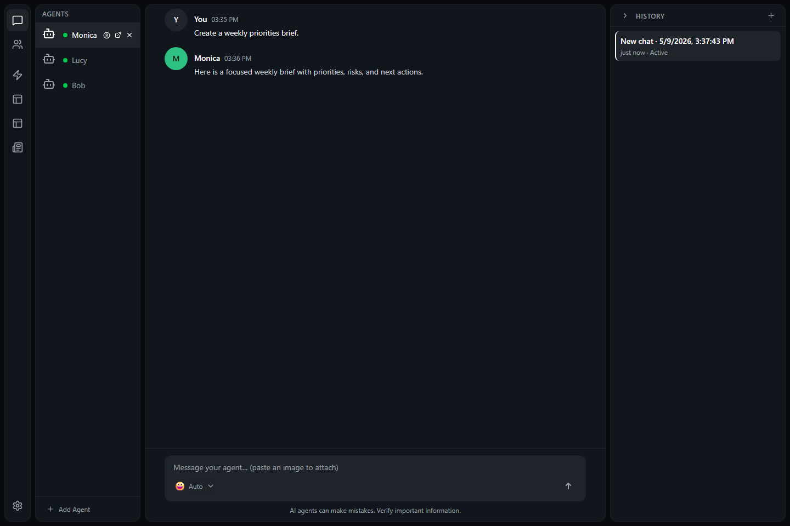

Open history
Use the history panel for the current mind.
 CHAMBER
GitHub
CHAMBER
GitHub
Conversation History
Conversation history keeps previous chats available for the selected mind. Resume a useful thread, rename it so it is easy to find, or delete it when you no longer need it.
Resume a conversation when you want the mind to continue from earlier messages instead of starting over.

Use the history panel for the current mind.
Select the thread that matches the work you want to continue.
Give the mind the next instruction or ask it to pick up where it left off.
Rename conversations so you can find them later. Use names that describe the topic, decision, or outcome.
Delete conversations you no longer need. Read the confirmation before continuing, because deleted history may not be recoverable.
Collapse the history panel when you want more room for chat. Your conversations are still available; the panel is only hidden or shortened.
Each mind has its own conversation history. This helps keep projects, roles, and routines separate.
An empty draft means there is no unsent message waiting in the message box. You can start fresh, or choose a past conversation before typing.
Conversation history can contain sensitive details you typed or pasted. Rename and delete carefully, and avoid keeping private information in a chat longer than needed.